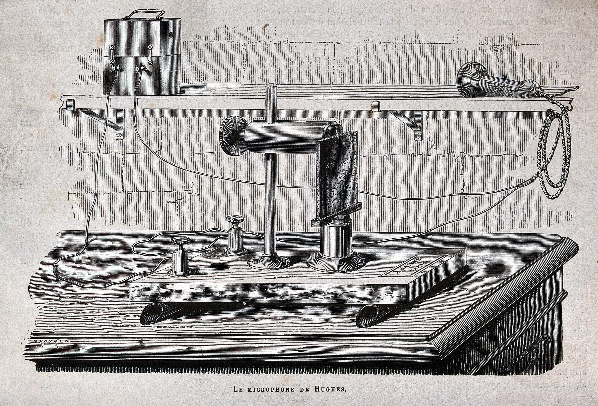
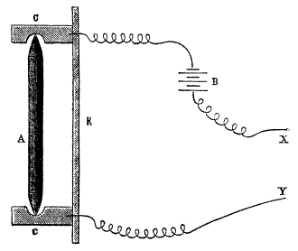

The Microphone - All about the history and the application of microphones
The Microphone
Microphone
-
Hughes Carbon Mic ~1870David Edward Hughes, England
The first microphone that enabled proper voice telephony was the (loose-contact) carbon microphone. This was independently developed by David Edward Hughes in England and Emile Berliner and Thomas Edison in the US. Although Edison was awarded the first patent (after a long legal dispute) in mid-1877, Hughes had demonstrated his working device in front of many witnesses some years earlier, and most historians credit him with its invention. More on Wikipedia...$? - Not available, DIY: IR not available
Let's add one a day challenge:
Do you like to add a microphone? Email to mat@themicrophone.org.